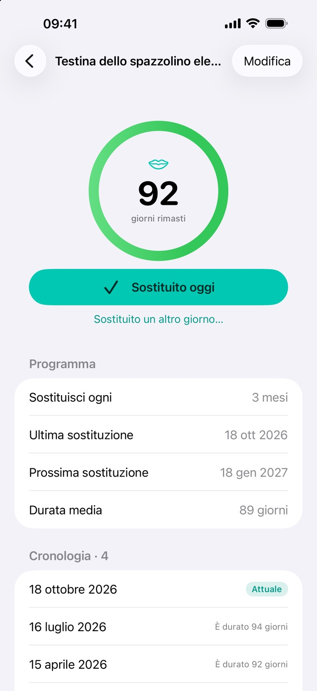
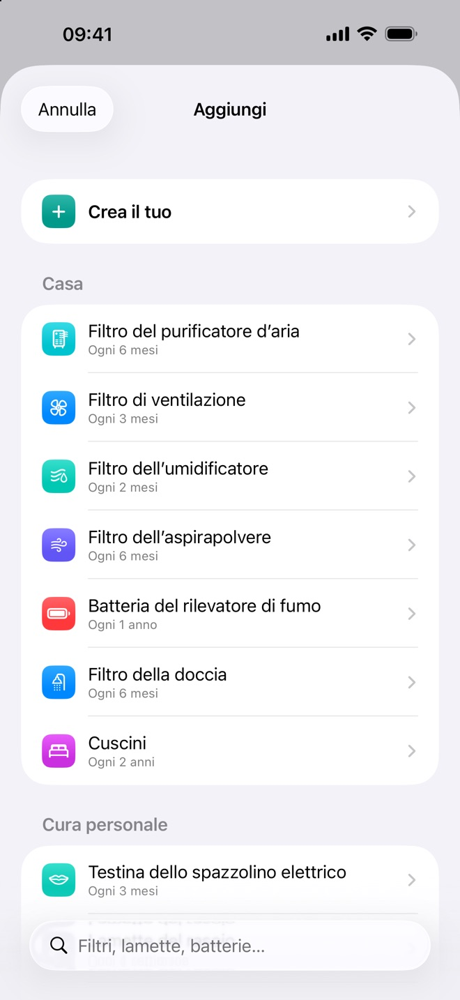
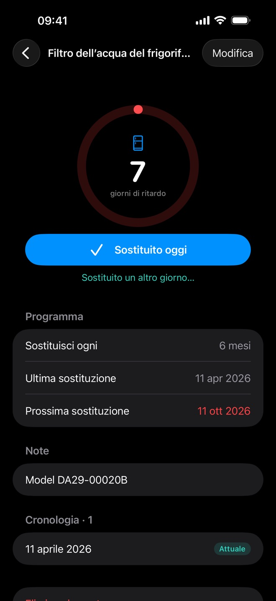
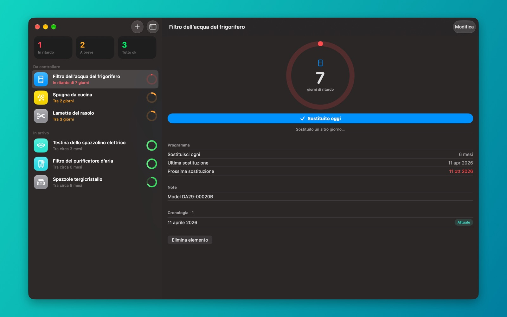
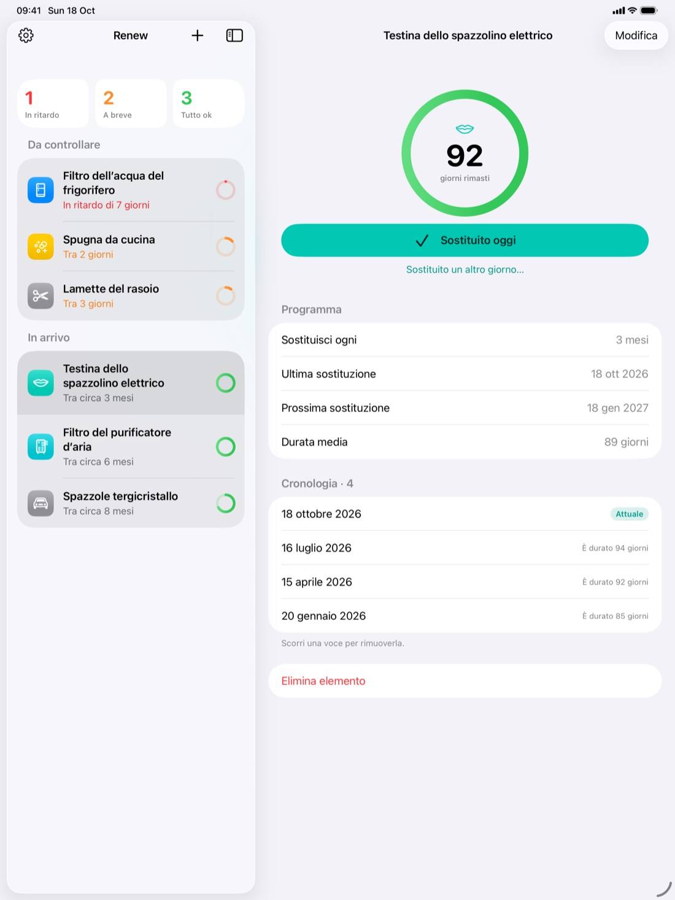
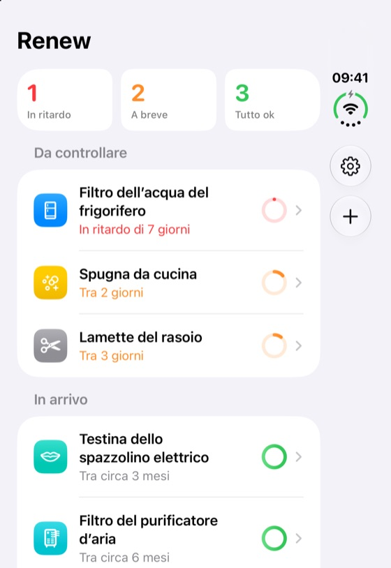
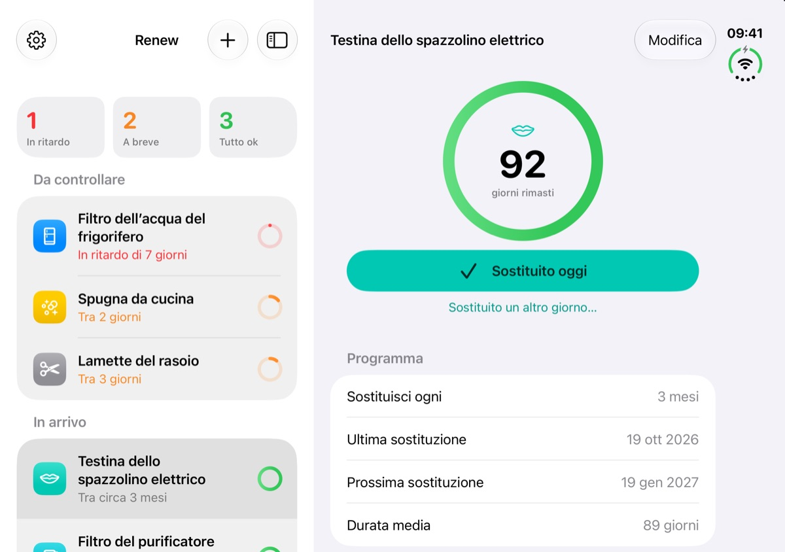

Registra con un tocco
Tocca o scorri per segnare qualcosa come sostituito oggi, oppure scegli un’altra data. Il conto alla rovescia riparte dal giorno in cui l’hai davvero sostituito.
Per iPhone, iPad e Mac
Renew ti ricorda quando è ora di sostituire ciò che si consuma, come filtri dell’acqua, testine dello spazzolino e lamette, e conserva la cronologia di ogni sostituzione.
Scegli tra 25 elementi pronti con intervalli di sostituzione tipici, oppure crea i tuoi.
Una notifica arriva nel giorno previsto, all’ora che preferisci.
Segnalo come sostituito e il conto alla rovescia riparte da quel giorno.
Tutto ciò che serve per tenere d’occhio filtri, testine e lamette, e niente di superfluo.
Tocca o scorri per segnare qualcosa come sostituito oggi, oppure scegli un’altra data. Il conto alla rovescia riparte dal giorno in cui l’hai davvero sostituito.
Scegli l’ora del promemoria, segna la sostituzione o rimandala direttamente dalla notifica, e scegli quali dispositivi ti avvisano.
Un anello per ogni elemento mostra la durata residua. Gli elementi in ritardo o in scadenza compaiono in alto.
Vedi ogni sostituzione passata, quanto è durata e la durata media.
I tuoi elementi restano sincronizzati tramite il tuo account iCloud privato. Preferisci tenere tutto su un solo dispositivo? Disattiva la sincronizzazione.
Nessun account, nessuna pubblicità, nessun tracciamento. I tuoi dati restano sui tuoi dispositivi e nel tuo iCloud.



Acquista una volta e usa Renew su iPhone, iPad e Mac. Un’app nativa su ciascuno, sincronizzata con iCloud.


Novità
Da chiuso, Renew mostra il tuo elenco sullo schermo esterno. Aprilo e l’elemento più urgente si apre proprio accanto all’elenco. Richiudilo e torni al tuo elenco.


| iPhone | iOS 18 o versioni successive |
|---|---|
| iPad | iPadOS 18 o versioni successive |
| Mac | macOS 15 Sequoia o versioni successive Chip Apple e Intel |
| iPhone Duo | Schermo esterno e interno |
| Prezzo | Acquisto una tantum. Nessun abbonamento, nessun acquisto in-app. |
|---|---|
| Sincronizzazione | Facoltativa. Serve lo stesso Apple Account connesso a iCloud su ogni dispositivo. |
| Account | Non serve. Funziona anche offline. |
| Accessibilità | VoiceOver, Testo dinamico, modalità scura |
Renew non ha server, né analisi, né pubblicità. Niente di ciò che registri arriva mai allo sviluppatore. Leggi l’informativa sulla privacy
Leggi le domande frequenti (in inglese) oppure apri una segnalazione per segnalare un problema o proporre una funzione.